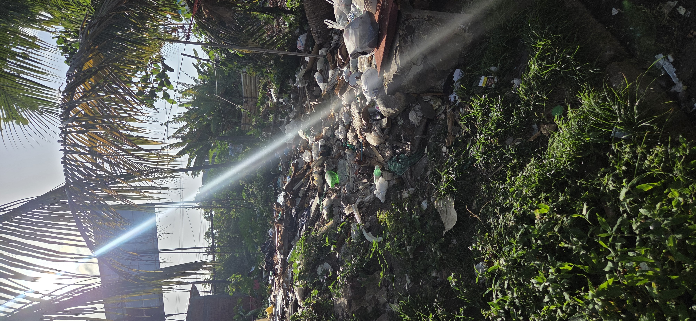

01 SAÚDE AMBIENTAL
Contra os efeitos danosos da poluição do ar, água e solo, dos ecossistemas maranhenses.
- Revisar leis existentes, em âmbito nacional, de proteção das comunidades rurais vizinhas a distrito industrial, no tocante à poluição do ar e saúde respiratória.
- Fiscalizar os índices de poluição da água e ecossistemas aquáticos, referentes à balneabilidade das praias e contaminação da ictiofauna por metais pesados.
- Aprovar mais medidas quanto ao uso intensivo de defensivos agrícolas, provocando chuvas químicas, que contaminam os solos, plantações e lençóis freáticos.

01 02
02
 03
03
 05
05